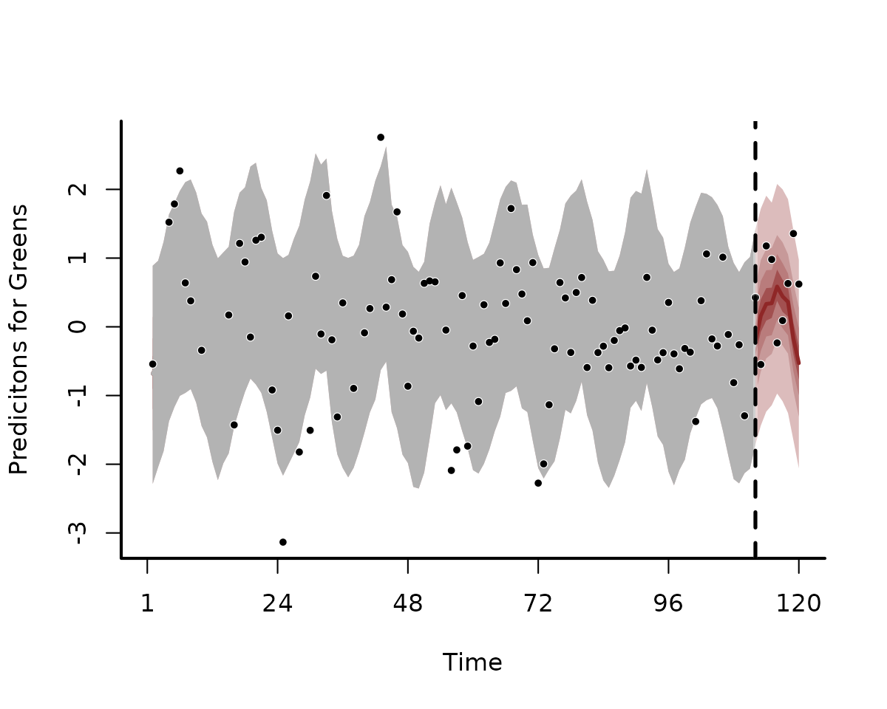
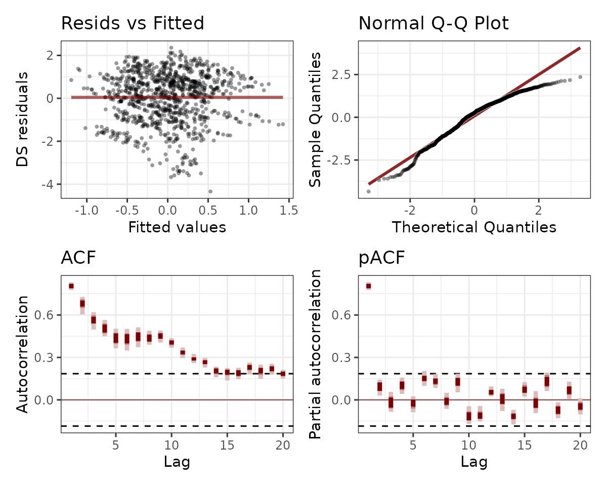
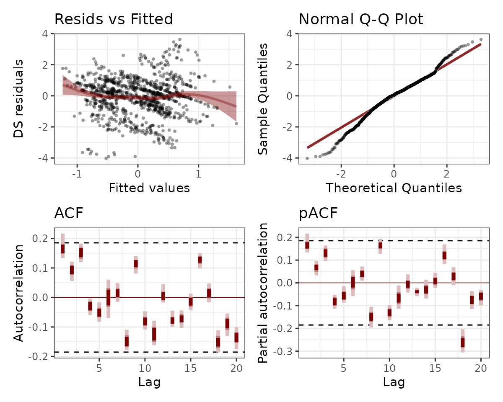
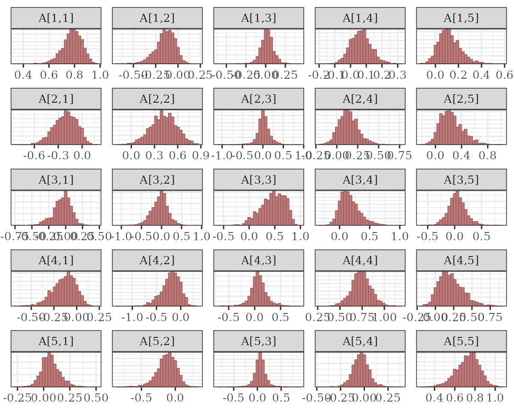
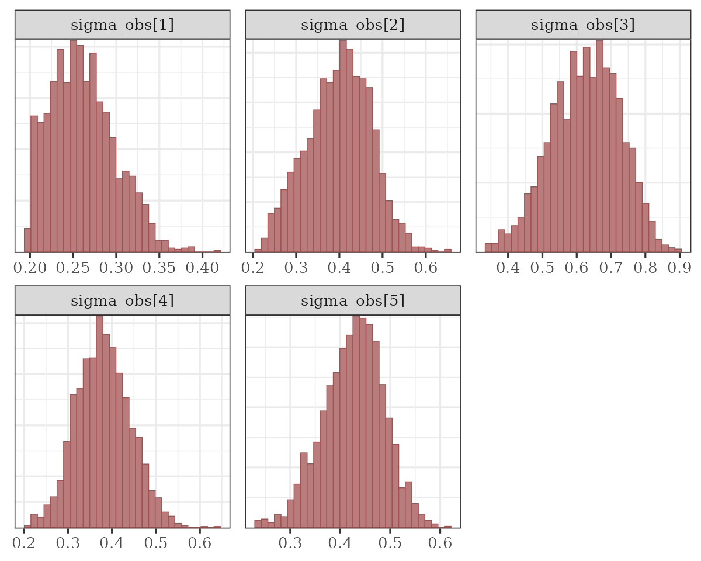
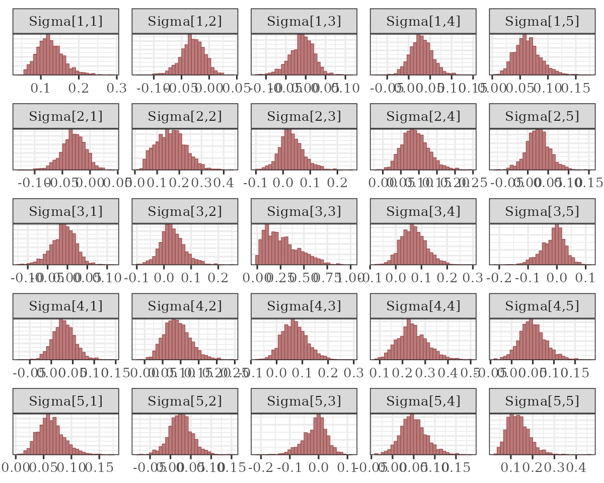
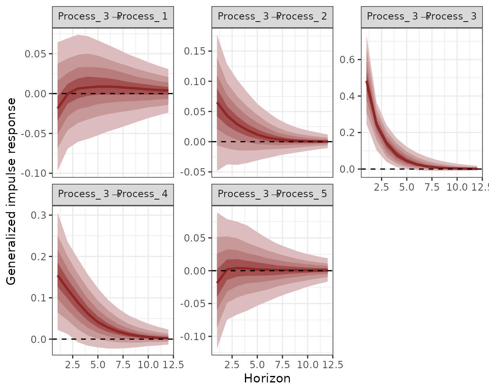

State-Space models in mvgam
Nicholas J Clark
2025-03-09
Source:vignettes/trend_formulas.Rmd
trend_formulas.RmdThe purpose of this vignette is to show how the mvgam
package can be used to fit and interrogate State-Space models with
nonlinear effects.
State-Space Models

State-Space models allow us to separately make inferences about the
underlying dynamic process model that we are interested in
(i.e. the evolution of a time series or a collection of time series) and
the observation model (i.e. the way that we survey / measure
this underlying process). This is extremely useful in ecology because
our observations are always imperfect / noisy measurements of the thing
we are interested in measuring. It is also helpful because we often know
that some covariates will impact our ability to measure accurately
(i.e. we cannot take accurate counts of rodents if there is a
thunderstorm happening) while other covariates might impact the
underlying process (it is highly unlikely that rodent abundance responds
to one storm, but instead probably responds to longer-term weather and
climate variation). A State-Space model allows us to model both
components in a single unified modelling framework. A major advantage of
mvgam is that it can include nonlinear effects and random
effects in BOTH model components while also capturing dynamic
processes.
Lake Washington plankton data
The data we will use to illustrate how we can fit State-Space models
in mvgam are from a long-term monitoring study of plankton
counts (cells per mL) taken from Lake Washington in Washington, USA. The
data are available as part of the MARSS package and can be
downloaded using the following:
We will work with five different groups of plankton:
outcomes <- c("Greens", "Bluegreens", "Diatoms", "Unicells", "Other.algae")As usual, preparing the data into the correct format for
mvgam modelling takes a little bit of wrangling in
dplyr:
# loop across each plankton group to create the long datframe
plankton_data <- do.call(rbind, lapply(outcomes, function(x) {
# create a group-specific dataframe with counts labelled 'y'
# and the group name in the 'series' variable
data.frame(
year = lakeWAplanktonTrans[, "Year"],
month = lakeWAplanktonTrans[, "Month"],
y = lakeWAplanktonTrans[, x],
series = x,
temp = lakeWAplanktonTrans[, "Temp"]
)
})) %>%
# change the 'series' label to a factor
dplyr::mutate(series = factor(series)) %>%
# filter to only include some years in the data
dplyr::filter(year >= 1965 & year < 1975) %>%
dplyr::arrange(year, month) %>%
dplyr::group_by(series) %>%
# z-score the counts so they are approximately standard normal
dplyr::mutate(y = as.vector(scale(y))) %>%
# add the time indicator
dplyr::mutate(time = dplyr::row_number()) %>%
dplyr::ungroup()Inspect the data structure
head(plankton_data)
#> # A tibble: 6 × 6
#> year month y series temp time
#> <dbl> <dbl> <dbl> <fct> <dbl> <int>
#> 1 1965 1 -0.542 Greens -1.23 1
#> 2 1965 1 -0.344 Bluegreens -1.23 1
#> 3 1965 1 -0.0768 Diatoms -1.23 1
#> 4 1965 1 -1.52 Unicells -1.23 1
#> 5 1965 1 -0.491 Other.algae -1.23 1
#> 6 1965 2 NA Greens -1.32 2
dplyr::glimpse(plankton_data)
#> Rows: 600
#> Columns: 6
#> $ year <dbl> 1965, 1965, 1965, 1965, 1965, 1965, 1965, 1965, 1965, 1965, 196…
#> $ month <dbl> 1, 1, 1, 1, 1, 2, 2, 2, 2, 2, 3, 3, 3, 3, 3, 4, 4, 4, 4, 4, 5, …
#> $ y <dbl> -0.54241769, -0.34410776, -0.07684901, -1.52243490, -0.49055442…
#> $ series <fct> Greens, Bluegreens, Diatoms, Unicells, Other.algae, Greens, Blu…
#> $ temp <dbl> -1.2306562, -1.2306562, -1.2306562, -1.2306562, -1.2306562, -1.…
#> $ time <int> 1, 1, 1, 1, 1, 2, 2, 2, 2, 2, 3, 3, 3, 3, 3, 4, 4, 4, 4, 4, 5, …Note that we have z-scored the counts in this example as that will make it easier to specify priors (though this is not completely necessary; it is often better to build a model that respects the properties of the actual outcome variables)
plot_mvgam_series(data = plankton_data, series = "all")We have some missing observations, but this isn’t an issue for
modelling in mvgam. A useful property to understand about
these counts is that they tend to be highly seasonal. Below are some
plots of z-scored counts against the z-scored temperature measurements
in the lake for each month:
plankton_data %>%
dplyr::filter(series == "Other.algae") %>%
ggplot(aes(x = time, y = temp)) +
geom_line(size = 1.1) +
geom_line(aes(y = y),
col = "white",
size = 1.3
) +
geom_line(aes(y = y),
col = "darkred",
size = 1.1
) +
ylab("z-score") +
xlab("Time") +
ggtitle("Temperature (black) vs Other algae (red)")
plankton_data %>%
dplyr::filter(series == "Diatoms") %>%
ggplot(aes(x = time, y = temp)) +
geom_line(size = 1.1) +
geom_line(aes(y = y),
col = "white",
size = 1.3
) +
geom_line(aes(y = y),
col = "darkred",
size = 1.1
) +
ylab("z-score") +
xlab("Time") +
ggtitle("Temperature (black) vs Diatoms (red)")We will have to try and capture this seasonality in our process model, which should be easy to do given the flexibility of GAMs. Next we will split the data into training and testing splits:
plankton_train <- plankton_data %>%
dplyr::filter(time <= 112)
plankton_test <- plankton_data %>%
dplyr::filter(time > 112)Now time to fit some models. This requires a bit of thinking about
how we can best tackle the seasonal variation and the likely dependence
structure in the data. These algae are interacting as part of a complex
system within the same lake, so we certainly expect there to be some
lagged cross-dependencies underling their dynamics. But if we do not
capture the seasonal variation, our multivariate dynamic model will be
forced to try and capture it, which could lead to poor convergence and
unstable results (we could feasibly capture cyclic dynamics with a more
complex multi-species Lotka-Volterra model, but ordinary differential
equation approaches are beyond the scope of mvgam).
Capturing seasonality
First we will fit a model that does not include a dynamic component,
just to see if it can reproduce the seasonal variation in the
observations. This model introduces hierarchical multidimensional
smooths, where all time series share a “global” tensor product of the
month and temp variables, capturing our
expectation that algal seasonality responds to temperature variation.
But this response should depend on when in the year these temperatures
are recorded (i.e. a response to warm temperatures in Spring should be
different to a response to warm temperatures in Autumn). The model also
fits series-specific deviation smooths (i.e. one tensor product per
series) to capture how each algal group’s seasonality differs from the
overall “global” seasonality. Note that we do not include
series-specific intercepts in this model because each series was
z-scored to have a mean of 0.
notrend_mod <- mvgam(
y ~
# tensor of temp and month to capture
# "global" seasonality
te(temp, month, k = c(4, 4)) +
# series-specific deviation tensor products
te(temp, month, k = c(4, 4), by = series) - 1,
family = gaussian(),
data = plankton_train,
newdata = plankton_test,
trend_model = "None"
)The “global” tensor product smooth function can be quickly visualized:
plot_mvgam_smooth(notrend_mod, smooth = 1)On this plot, red indicates below-average linear predictors and white indicates above-average. We can then plot the deviation smooths for a few algal groups to see how they vary from the “global” pattern:
plot_mvgam_smooth(notrend_mod, smooth = 2)
plot_mvgam_smooth(notrend_mod, smooth = 3)These multidimensional smooths have done a good job of capturing the seasonal variation in our observations:
plot(notrend_mod, type = "forecast", series = 1)
plot(notrend_mod, type = "forecast", series = 2)
plot(notrend_mod, type = "forecast", series = 3)
This basic model gives us confidence that we can capture the seasonal variation in the observations. But the model has not captured the remaining temporal dynamics, which is obvious when we inspect Dunn-Smyth residuals for a few series:
plot(notrend_mod, type = "residuals", series = 1)
plot(notrend_mod, type = "residuals", series = 3)
Multiseries dynamics
Now it is time to get into multivariate State-Space models. We will fit two models that can both incorporate lagged cross-dependencies in the latent process models. The first model assumes that the process errors operate independently from one another, while the second assumes that there may be contemporaneous correlations in the process errors. Both models include a Vector Autoregressive component for the process means, and so both can model complex community dynamics. The models can be described mathematically as follows:
\[\begin{align*} \boldsymbol{count}_t & \sim \text{Normal}(\mu_{obs[t]}, \sigma_{obs}) \\ \mu_{obs[t]} & = process_t \\ process_t & \sim \text{MVNormal}(\mu_{process[t]}, \Sigma_{process}) \\ \mu_{process[t]} & = A * process_{t-1} + f_{global}(\boldsymbol{month},\boldsymbol{temp})_t + f_{series}(\boldsymbol{month},\boldsymbol{temp})_t \\ f_{global}(\boldsymbol{month},\boldsymbol{temp}) & = \sum_{k=1}^{K}b_{global} * \beta_{global} \\ f_{series}(\boldsymbol{month},\boldsymbol{temp}) & = \sum_{k=1}^{K}b_{series} * \beta_{series} \end{align*}\]
Here you can see that there are no terms in the observation model
apart from the underlying process model. But we could easily add
covariates into the observation model if we felt that they could explain
some of the systematic observation errors. We also assume independent
observation processes (there is no covariance structure in the
observation errors \(\sigma_{obs}\)).
At present, mvgam does not support multivariate observation
models. But this feature will be added in future versions. However the
underlying process model is multivariate, and there is a lot going on
here. This component has a Vector Autoregressive part, where the process
mean at time \(t\) \((\mu_{process[t]})\) is a vector that
evolves as a function of where the vector-valued process model was at
time \(t-1\). The \(A\) matrix captures these dynamics with
self-dependencies on the diagonal and possibly asymmetric
cross-dependencies on the off-diagonals, while also incorporating the
nonlinear smooth functions that capture seasonality for each series. The
contemporaneous process errors are modeled by \(\Sigma_{process}\), which can be
constrained so that process errors are independent (i.e. setting the
off-diagonals to 0) or can be fully parameterized using a Cholesky
decomposition (using Stan’s \(LKJcorr\) distribution to place a prior on
the strength of inter-species correlations). For those that are
interested in the inner-workings, mvgam makes use of a
recent breakthrough by Sarah
Heaps to enforce stationarity of Bayesian VAR processes. This is
advantageous as we often don’t expect forecast variance to increase
without bound forever into the future, but many estimated VARs tend to
behave this way.
Ok that was a lot to take in. Let’s fit some models to try and
inspect what is going on and what they assume. But first, we need to
update mvgam’s default priors for the observation and
process errors. By default, mvgam uses a fairly wide
Student-T prior on these parameters to avoid being overly informative.
But our observations are z-scored and so we do not expect very large
process or observation errors. However, we also do not expect very small
observation errors either as we know these measurements are not perfect.
So let’s update the priors for these parameters. In doing so, you will
get to see how the formula for the latent process (i.e. trend) model is
used in mvgam:
priors <- get_mvgam_priors(
# observation formula, which has no terms in it
y ~ -1,
# process model formula, which includes the smooth functions
trend_formula = ~ te(temp, month, k = c(4, 4)) +
te(temp, month, k = c(4, 4), by = trend) - 1,
# VAR1 model with uncorrelated process errors
trend_model = VAR(),
family = gaussian(),
data = plankton_train
)Get names of all parameters whose priors can be modified:
priors[, 3]
#> [1] "(Intercept)"
#> [2] "process error sd"
#> [3] "diagonal autocorrelation population mean"
#> [4] "off-diagonal autocorrelation population mean"
#> [5] "diagonal autocorrelation population variance"
#> [6] "off-diagonal autocorrelation population variance"
#> [7] "shape1 for diagonal autocorrelation precision"
#> [8] "shape1 for off-diagonal autocorrelation precision"
#> [9] "shape2 for diagonal autocorrelation precision"
#> [10] "shape2 for off-diagonal autocorrelation precision"
#> [11] "observation error sd"
#> [12] "te(temp,month) smooth parameters, te(temp,month):trendtrend1 smooth parameters, te(temp,month):trendtrend2 smooth parameters, te(temp,month):trendtrend3 smooth parameters, te(temp,month):trendtrend4 smooth parameters, te(temp,month):trendtrend5 smooth parameters"And their default prior distributions:
priors[, 4]
#> [1] "(Intercept) ~ student_t(3, -0.1, 2.5);"
#> [2] "sigma ~ student_t(3, 0, 2.5);"
#> [3] "es[1] = 0;"
#> [4] "es[2] = 0;"
#> [5] "fs[1] = sqrt(0.455);"
#> [6] "fs[2] = sqrt(0.455);"
#> [7] "gs[1] = 1.365;"
#> [8] "gs[2] = 1.365;"
#> [9] "hs[1] = 0.071175;"
#> [10] "hs[2] = 0.071175;"
#> [11] "sigma_obs ~ student_t(3, 0, 2.5);"
#> [12] "lambda_trend ~ normal(5, 30);"Setting priors is easy in mvgam as you can use
brms routines. Here we use more informative Normal priors
for both error components, but we impose a lower bound of 0.2 for the
observation errors:
priors <- c(
prior(normal(0.5, 0.1), class = sigma_obs, lb = 0.2),
prior(normal(0.5, 0.25), class = sigma)
)You may have noticed something else unique about this model: there is
no intercept term in the observation formula. This is because a shared
intercept parameter can sometimes be unidentifiable with respect to the
latent VAR process, particularly if our series have similar long-run
averages (which they do in this case because they were z-scored). We
will often get better convergence in these State-Space models if we drop
this parameter. mvgam accomplishes this by fixing the
coefficient for the intercept to zero. Now we can fit the first model,
which assumes that process errors are contemporaneously uncorrelated
var_mod <- mvgam(
# observation formula, which is empty
y ~ -1,
# process model formula, which includes the smooth functions
trend_formula = ~ te(temp, month, k = c(4, 4)) +
te(temp, month, k = c(4, 4), by = trend) - 1,
# VAR1 model with uncorrelated process errors
trend_model = VAR(),
family = gaussian(),
data = plankton_train,
newdata = plankton_test,
# include the updated priors
priors = priors,
silent = 2
)Inspecting SS models
This model’s summary is a bit different to other mvgam
summaries. It separates parameters based on whether they belong to the
observation model or to the latent process model. This is because we may
often have covariates that impact the observations but not the latent
process, so we can have fairly complex models for each component. You
will notice that some parameters have not fully converged, particularly
for the VAR coefficients (called A in the output) and for
the process errors (Sigma). Note that we set
include_betas = FALSE to stop the summary from printing
output for all of the spline coefficients, which can be dense and hard
to interpret:
summary(var_mod, include_betas = FALSE)
#> GAM observation formula:
#> y ~ 1
#>
#> GAM process formula:
#> ~te(temp, month, k = c(4, 4)) + te(temp, month, k = c(4, 4),
#> by = trend) - 1
#>
#> Family:
#> gaussian
#>
#> Link function:
#> identity
#>
#> Trend model:
#> VAR()
#>
#>
#> N process models:
#> 5
#>
#> N series:
#> 5
#>
#> N timepoints:
#> 120
#>
#> Status:
#> Fitted using Stan
#> 4 chains, each with iter = 1500; warmup = 1000; thin = 1
#> Total post-warmup draws = 2000
#>
#>
#> Observation error parameter estimates:
#> 2.5% 50% 97.5% Rhat n_eff
#> sigma_obs[1] 0.20 0.26 0.34 1.02 309
#> sigma_obs[2] 0.26 0.40 0.54 1.01 232
#> sigma_obs[3] 0.42 0.63 0.80 1.07 59
#> sigma_obs[4] 0.26 0.38 0.50 1.01 354
#> sigma_obs[5] 0.30 0.43 0.54 1.00 267
#>
#> GAM observation model coefficient (beta) estimates:
#> 2.5% 50% 97.5% Rhat n_eff
#> (Intercept) 0 0 0 NaN NaN
#>
#> Process model VAR parameter estimates:
#> 2.5% 50% 97.5% Rhat n_eff
#> A[1,1] 0.620 0.790 0.910 1.01 355
#> A[1,2] -0.390 -0.130 0.041 1.01 277
#> A[1,3] -0.160 0.017 0.180 1.00 600
#> A[1,4] -0.058 0.064 0.200 1.00 614
#> A[1,5] -0.038 0.110 0.350 1.01 330
#> A[2,1] -0.510 -0.200 0.025 1.00 220
#> A[2,2] 0.079 0.420 0.730 1.00 220
#> A[2,3] -0.310 0.012 0.350 1.02 161
#> A[2,4] -0.067 0.130 0.410 1.01 234
#> A[2,5] -0.034 0.220 0.630 1.01 243
#> A[3,1] -0.360 -0.036 0.170 1.01 513
#> A[3,2] -0.500 -0.029 0.350 1.00 416
#> A[3,3] -0.024 0.480 0.820 1.07 68
#> A[3,4] -0.091 0.140 0.570 1.03 177
#> A[3,5] -0.280 0.040 0.410 1.00 680
#> A[4,1] -0.420 -0.120 0.075 1.01 209
#> A[4,2] -0.650 -0.180 0.110 1.01 178
#> A[4,3] -0.270 0.069 0.470 1.02 177
#> A[4,4] 0.510 0.740 0.960 1.01 272
#> A[4,5] -0.052 0.190 0.600 1.01 254
#> A[5,1] -0.096 0.059 0.260 1.00 646
#> A[5,2] -0.450 -0.120 0.120 1.01 234
#> A[5,3] -0.200 0.055 0.310 1.01 251
#> A[5,4] -0.210 -0.036 0.140 1.00 413
#> A[5,5] 0.470 0.740 0.930 1.00 507
#>
#> Process error parameter estimates:
#> 2.5% 50% 97.5% Rhat n_eff
#> Sigma[1,1] 0.068 0.11 0.18 1.01 541
#> Sigma[1,2] 0.000 0.00 0.00 NaN NaN
#> Sigma[1,3] 0.000 0.00 0.00 NaN NaN
#> Sigma[1,4] 0.000 0.00 0.00 NaN NaN
#> Sigma[1,5] 0.000 0.00 0.00 NaN NaN
#> Sigma[2,1] 0.000 0.00 0.00 NaN NaN
#> Sigma[2,2] 0.054 0.16 0.30 1.02 168
#> Sigma[2,3] 0.000 0.00 0.00 NaN NaN
#> Sigma[2,4] 0.000 0.00 0.00 NaN NaN
#> Sigma[2,5] 0.000 0.00 0.00 NaN NaN
#> Sigma[3,1] 0.000 0.00 0.00 NaN NaN
#> Sigma[3,2] 0.000 0.00 0.00 NaN NaN
#> Sigma[3,3] 0.045 0.30 0.68 1.09 43
#> Sigma[3,4] 0.000 0.00 0.00 NaN NaN
#> Sigma[3,5] 0.000 0.00 0.00 NaN NaN
#> Sigma[4,1] 0.000 0.00 0.00 NaN NaN
#> Sigma[4,2] 0.000 0.00 0.00 NaN NaN
#> Sigma[4,3] 0.000 0.00 0.00 NaN NaN
#> Sigma[4,4] 0.098 0.21 0.34 1.01 400
#> Sigma[4,5] 0.000 0.00 0.00 NaN NaN
#> Sigma[5,1] 0.000 0.00 0.00 NaN NaN
#> Sigma[5,2] 0.000 0.00 0.00 NaN NaN
#> Sigma[5,3] 0.000 0.00 0.00 NaN NaN
#> Sigma[5,4] 0.000 0.00 0.00 NaN NaN
#> Sigma[5,5] 0.060 0.13 0.26 1.01 243
#>
#> Approximate significance of GAM process smooths:
#> edf Ref.df Chi.sq p-value
#> te(temp,month) 4.98 15 33.02 0.038 *
#> te(temp,month):seriestrend1 1.16 15 7.33 0.998
#> te(temp,month):seriestrend2 2.71 15 64.58 0.471
#> te(temp,month):seriestrend3 1.55 15 1.50 1.000
#> te(temp,month):seriestrend4 1.32 15 5.55 0.999
#> te(temp,month):seriestrend5 1.62 15 12.47 0.977
#> ---
#> Signif. codes: 0 '***' 0.001 '**' 0.01 '*' 0.05 '.' 0.1 ' ' 1
#>
#> Stan MCMC diagnostics:
#> n_eff / iter looks reasonable for all parameters
#> Rhats above 1.05 found for 8 parameters
#> *Diagnose further to investigate why the chains have not mixed
#> 0 of 2000 iterations ended with a divergence (0%)
#> 0 of 2000 iterations saturated the maximum tree depth of 10 (0%)
#> E-FMI indicated no pathological behavior
#>
#> Samples were drawn using NUTS(diag_e) at Sun Mar 09 03:57:32 2025.
#> For each parameter, n_eff is a crude measure of effective sample size,
#> and Rhat is the potential scale reduction factor on split MCMC chains
#> (at convergence, Rhat = 1)
#>
#> Use how_to_cite(var_mod) to get started describing this modelThe convergence of this model isn’t fabulous (more on this in a
moment). But we can again plot the smooth functions, which this time
operate on the process model. We can see the same plot using
trend_effects = TRUE in the plotting functions:
plot(var_mod, "smooths", trend_effects = TRUE)The VAR matrix is of particular interest here, as it captures lagged
dependencies and cross-dependencies in the latent process model.
Unfortunately bayesplot doesn’t know this is a matrix of
parameters so what we see is actually the transpose of the VAR matrix. A
little bit of wrangling gives us these histograms in the correct
order:
A_pars <- matrix(NA, nrow = 5, ncol = 5)
for (i in 1:5) {
for (j in 1:5) {
A_pars[i, j] <- paste0("A[", i, ",", j, "]")
}
}
mcmc_plot(var_mod,
variable = as.vector(t(A_pars)),
type = "hist"
)
There is a lot happening in this matrix. Each cell captures the lagged effect of the process in the column on the process in the row in the next timestep. So for example, the effect in cell [1,3] shows how an increase in the process for series 3 (Greens) at time \(t\) is expected to impact the process for series 1 (Bluegreens) at time \(t+1\). The latent process model is now capturing these effects and the smooth seasonal effects.
The process error \((\Sigma)\) captures unmodelled variation in the process models. Again, we fixed the off-diagonals to 0, so the histograms for these will look like flat boxes:
Sigma_pars <- matrix(NA, nrow = 5, ncol = 5)
for (i in 1:5) {
for (j in 1:5) {
Sigma_pars[i, j] <- paste0("Sigma[", i, ",", j, "]")
}
}
mcmc_plot(var_mod,
variable = as.vector(t(Sigma_pars)),
type = "hist"
)The observation error estimates \((\sigma_{obs})\) represent how much the model thinks we might miss the true count when we take our imperfect measurements:
mcmc_plot(var_mod, variable = "sigma_obs", regex = TRUE, type = "hist")
These are still a bit hard to identify overall, especially when trying to estimate both process and observation error. Often we need to make some strong assumptions about which of these is more important for determining unexplained variation in our observations.
Correlated process errors
Let’s see if these estimates improve when we allow the process errors to be correlated. Once again, we need to first update the priors for the observation errors:
priors <- c(
prior(normal(0.5, 0.1), class = sigma_obs, lb = 0.2),
prior(normal(0.5, 0.25), class = sigma)
)And now we can fit the correlated process error model
varcor_mod <- mvgam(
# observation formula, which remains empty
y ~ -1,
# process model formula, which includes the smooth functions
trend_formula = ~ te(temp, month, k = c(4, 4)) +
te(temp, month, k = c(4, 4), by = trend) - 1,
# VAR1 model with correlated process errors
trend_model = VAR(cor = TRUE),
family = gaussian(),
data = plankton_train,
newdata = plankton_test,
# include the updated priors
priors = priors,
silent = 2
)The \((\Sigma)\) matrix now captures any evidence of contemporaneously correlated process error:
Sigma_pars <- matrix(NA, nrow = 5, ncol = 5)
for (i in 1:5) {
for (j in 1:5) {
Sigma_pars[i, j] <- paste0("Sigma[", i, ",", j, "]")
}
}
mcmc_plot(varcor_mod,
variable = as.vector(t(Sigma_pars)),
type = "hist"
)
This symmetric matrix tells us there is support for correlated process errors, as several of the off-diagonal entries are strongly non-zero. But it is easier to interpret these estimates if we convert the covariance matrix to a correlation matrix. Here we compute the posterior median process error correlations:
Sigma_post <- as.matrix(varcor_mod, variable = "Sigma", regex = TRUE)
median_correlations <- cov2cor(matrix(apply(Sigma_post, 2, median),
nrow = 5, ncol = 5
))
rownames(median_correlations) <- colnames(median_correlations) <- levels(plankton_train$series)
round(median_correlations, 2)
#> Bluegreens Diatoms Greens Other.algae Unicells
#> Bluegreens 1.00 -0.20 -0.03 0.17 0.50
#> Diatoms -0.20 1.00 0.19 0.46 0.19
#> Greens -0.03 0.19 1.00 0.35 -0.04
#> Other.algae 0.17 0.46 0.35 1.00 0.27
#> Unicells 0.50 0.19 -0.04 0.27 1.00Impulse response functions
Because Vector Autoregressions can capture complex lagged
dependencies, it is often difficult to understand how the member time
series are thought to interact with one another. A method that is
commonly used to directly test for possible interactions is to compute
an Impulse
Response Function (IRF). If \(h\)
represents the simulated forecast horizon, an IRF asks how each of the
remaining series might respond over times \((t+1):h\) if a focal series is given an
innovation “shock” at time \(t = 0\).
mvgam can compute Generalized and Orthogonalized IRFs from
models that included latent VAR dynamics. We simply feed the fitted
model to the irf() function and then use the S3
plot() function to view the estimated responses. By
default, irf() will compute IRFs by separately imposing
positive shocks of one standard deviation to each series in the VAR
process. Here we compute Generalized IRFs over a horizon of 12
timesteps:
irfs <- irf(varcor_mod, h = 12)A summary of the IRFs can be computed using the
summary() function:
summary(irfs)
#> # A tibble: 300 × 5
#> shock horizon irf_median irf_Qlower irf_Qupper
#> <chr> <int> <dbl> <dbl> <dbl>
#> 1 Process1 -> Process1 1 0.353 0.270 0.446
#> 2 Process1 -> Process1 2 0.298 0.236 0.371
#> 3 Process1 -> Process1 3 0.252 0.196 0.318
#> 4 Process1 -> Process1 4 0.214 0.159 0.280
#> 5 Process1 -> Process1 5 0.181 0.126 0.250
#> 6 Process1 -> Process1 6 0.153 0.0971 0.227
#> 7 Process1 -> Process1 7 0.130 0.0734 0.204
#> 8 Process1 -> Process1 8 0.111 0.0541 0.184
#> 9 Process1 -> Process1 9 0.0951 0.0396 0.169
#> 10 Process1 -> Process1 10 0.0808 0.0288 0.155
#> # ℹ 290 more rowsBut it is easier to understand these responses using plots. For
example, we can plot the expected responses of the remaining series to a
positive shock for series 3 (Greens) using the plot()
function:
plot(irfs, series = 3)
This series of plots makes it clear that some of the other series would be expected to show both instantaneous responses to a shock for the Greens (due to their correlated process errors) as well as delayed and nonlinear responses over time (due to the complex lagged dependence structure captured by the \(A\) matrix). This hopefully makes it clear why IRFs are an important tool in the analysis of multivariate autoregressive models. You can also use these IRFs to calculate a relative contribution from each shock to the forecast error variance for a focal series. This method, known as a Forecast Error Variance Decomposition (FEVD), is useful to get an idea about the amount of information that each series contributes to the evolution of all other series in a Vector Autoregression:
The plot above shows the median contribution to forecast error variance for each series.
Comparing forecast scores
But which model is better? We can compute the variogram score for out of sample forecasts to get a sense of which model does a better job of capturing the dependence structure in the true evaluation set:
# create forecast objects for each model
fcvar <- forecast(var_mod)
fcvarcor <- forecast(varcor_mod)
# plot the difference in variogram scores; a negative value means the VAR1cor model is better, while a positive value means the VAR1 model is better
diff_scores <- score(fcvarcor, score = "variogram")$all_series$score -
score(fcvar, score = "variogram")$all_series$score
plot(diff_scores,
pch = 16, cex = 1.25, col = "darkred",
ylim = c(
-1 * max(abs(diff_scores), na.rm = TRUE),
max(abs(diff_scores), na.rm = TRUE)
),
bty = "l",
xlab = "Forecast horizon",
ylab = expression(variogram[VAR1cor] ~ -~ variogram[VAR1])
)
abline(h = 0, lty = "dashed")And we can also compute the energy score for out of sample forecasts to get a sense of which model provides forecasts that are better calibrated:
# plot the difference in energy scores; a negative value means the VAR1cor model is better, while a positive value means the VAR1 model is better
diff_scores <- score(fcvarcor, score = "energy")$all_series$score -
score(fcvar, score = "energy")$all_series$score
plot(diff_scores,
pch = 16, cex = 1.25, col = "darkred",
ylim = c(
-1 * max(abs(diff_scores), na.rm = TRUE),
max(abs(diff_scores), na.rm = TRUE)
),
bty = "l",
xlab = "Forecast horizon",
ylab = expression(energy[VAR1cor] ~ -~ energy[VAR1])
)
abline(h = 0, lty = "dashed")
The models tend to provide similar forecasts, though the correlated
error model does slightly better overall. We would probably need to use
a more extensive rolling forecast evaluation exercise if we felt like we
needed to only choose one for production. mvgam offers some
utilities for doing this (i.e. see ?lfo_cv for guidance).
Alternatively, we could use forecasts from both models by
creating an evenly-weighted ensemble forecast distribution. This
capability is available using the ensemble() function in
mvgam (see ?ensemble for guidance).
Using how_to_cite() for models with VAR dynamics will
give you information on how they are restricted to remain
stationary:
description <- how_to_cite(varcor_mod)
description#> Methods text skeleton
#> We used the R package mvgam (version 1.1.5001; Clark & Wells, 2023) to
#> construct, fit and interrogate the model. mvgam fits Bayesian
#> State-Space models that can include flexible predictor effects in both
#> the process and observation components by incorporating functionalities
#> from the brms (Burkner 2017), mgcv (Wood 2017) and splines2 (Wang & Yan,
#> 2023) packages. To encourage stability and prevent forecast variance
#> from increasing indefinitely, we enforced stationarity of the Vector
#> Autoregressive process following methods described by Heaps (2023) and
#> Clark et al. (2025). The mvgam-constructed model and observed data were
#> passed to the probabilistic programming environment Stan (version
#> 2.36.0; Carpenter et al. 2017, Stan Development Team 2025), specifically
#> through the cmdstanr interface (Gabry & Cesnovar, 2021). We ran 4
#> Hamiltonian Monte Carlo chains for 1000 warmup iterations and 500
#> sampling iterations for joint posterior estimation. Rank normalized
#> split Rhat (Vehtari et al. 2021) and effective sample sizes were used to
#> monitor convergence.#>
#> Primary references
#> Clark, NJ and Wells K (2023). Dynamic Generalized Additive Models
#> (DGAMs) for forecasting discrete ecological time series. Methods in
#> Ecology and Evolution, 14, 771-784. doi.org/10.1111/2041-210X.13974
#> Burkner, PC (2017). brms: An R Package for Bayesian Multilevel Models
#> Using Stan. Journal of Statistical Software, 80(1), 1-28.
#> doi:10.18637/jss.v080.i01
#> Wood, SN (2017). Generalized Additive Models: An Introduction with R
#> (2nd edition). Chapman and Hall/CRC.
#> Wang W and Yan J (2021). Shape-Restricted Regression Splines with R
#> Package splines2. Journal of Data Science, 19(3), 498-517.
#> doi:10.6339/21-JDS1020 https://doi.org/10.6339/21-JDS1020.
#> Heaps, SE (2023). Enforcing stationarity through the prior in vector
#> autoregressions. Journal of Computational and Graphical Statistics 32,
#> 74-83.
#> Clark NJ, Ernest SKM, Senyondo H, Simonis J, White EP, Yenni GM,
#> Karunarathna KANK (2025). Beyond single-species models: leveraging
#> multispecies forecasts to navigate the dynamics of ecological
#> predictability. PeerJ 13:e18929.
#> Carpenter, B, Gelman, A, Hoffman, MD, Lee, D, Goodrich, B, Betancourt,
#> M, Brubaker, M, Guo, J, Li, P and Riddell, A (2017). Stan: A
#> probabilistic programming language. Journal of Statistical Software 76.
#> Gabry J, Cesnovar R, Johnson A, and Bronder S (2025). cmdstanr: R
#> Interface to 'CmdStan'. https://mc-stan.org/cmdstanr/,
#> https://discourse.mc-stan.org.
#> Vehtari A, Gelman A, Simpson D, Carpenter B, and Burkner P (2021).
#> Rank-normalization, folding, and localization: An improved Rhat for
#> assessing convergence of MCMC (with discussion). Bayesian Analysis 16(2)
#> 667-718. https://doi.org/10.1214/20-BA1221.
#>
#> Other useful references
#> Arel-Bundock, V, Greifer, N, and Heiss, A (2024). How to interpret
#> statistical models using marginaleffects for R and Python. Journal of
#> Statistical Software, 111(9), 1-32.
#> https://doi.org/10.18637/jss.v111.i09
#> Gabry J, Simpson D, Vehtari A, Betancourt M, and Gelman A (2019).
#> Visualization in Bayesian workflow. Journal of the Royal Statatistical
#> Society A, 182, 389-402. doi:10.1111/rssa.12378.
#> Vehtari A, Gelman A, and Gabry J (2017). Practical Bayesian model
#> evaluation using leave-one-out cross-validation and WAIC. Statistics and
#> Computing, 27, 1413-1432. doi:10.1007/s11222-016-9696-4.
#> Burkner, PC, Gabry, J, and Vehtari, A. (2020). Approximate
#> leave-future-out cross-validation for Bayesian time series models.
#> Journal of Statistical Computation and Simulation, 90(14), 2499-2523.
#> https://doi.org/10.1080/00949655.2020.1783262More advanced hierarchical panel VAR models can also be handled by
using the gr and subgr arguments in
VAR(). These models are useful if you have a data for the
same set of series (subgr) that are measured in different
regions (gr), such as species measured in different
sampling regions or financial series measured in different
countries.
Further reading
The following papers and resources offer a lot of useful material about multivariate State-Space models and how they can be applied in practice:
Auger‐Méthé, Marie, et al. “A guide to state–space modeling of ecological time series.” Ecological Monographs 91.4 (2021): e01470.
Clark, Nicholas J., et al. Beyond single-species models: leveraging multispecies forecasts to navigate the dynamics of ecological predictability. PeerJ. (2025): 13:e18929
Heaps, Sarah E. “Enforcing stationarity through the prior in vector autoregressions.” Journal of Computational and Graphical Statistics 32.1 (2023): 74-83.
Hannaford, Naomi E., et al. “A sparse Bayesian hierarchical vector autoregressive model for microbial dynamics in a wastewater treatment plant.” Computational Statistics & Data Analysis 179 (2023): 107659.
Holmes, Elizabeth E., Eric J. Ward, and Wills Kellie. “MARSS: multivariate autoregressive state-space models for analyzing time-series data.” R Journal. 4.1 (2012): 11.
Ward, Eric J., et al. “Inferring spatial structure from time‐series data: using multivariate state‐space models to detect metapopulation structure of California sea lions in the Gulf of California, Mexico.” Journal of Applied Ecology 47.1 (2010): 47-56.
Interested in contributing?
I’m actively seeking PhD students and other researchers to work in
the areas of ecological forecasting, multivariate model evaluation and
development of mvgam. Please see this small list of
opportunities on my website and do reach out if you are interested
(n.clark’at’uq.edu.au)